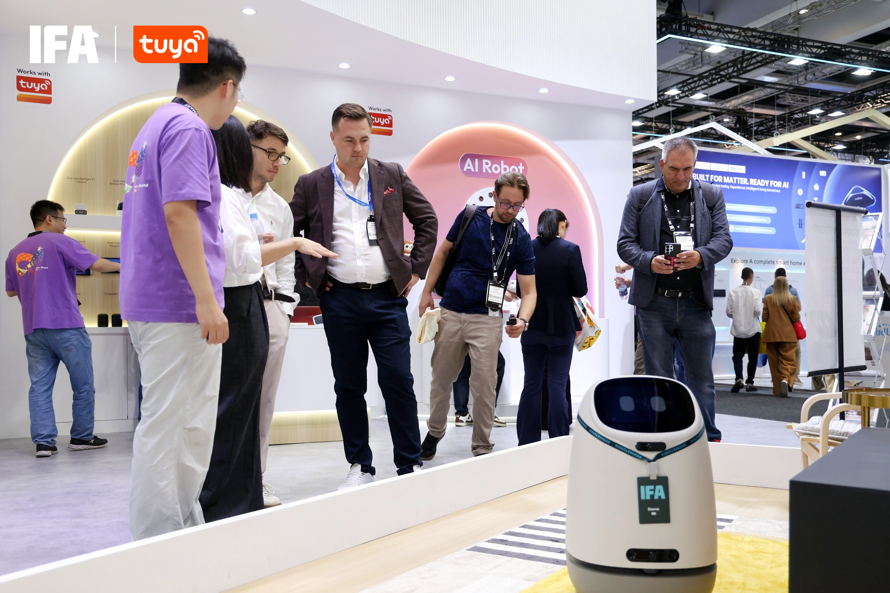

厨房智能硬件 · AI技术趋势
涂鸦电话会：厨房家电营收同比增约72%，彩屏与AI语音成增长方向
涂鸦智能11月24日Q3业绩电话会上称，厨房家电本季营收同比增长约72%；公司将彩色显示与AI语音能力列为增长驱动，并称平台设备已创建超过2.9万个AI Agent。

这组数据来自平台服务商的业绩电话会，而不是厨电品牌市场份额统计。管理层还提到，平台智能设备Agent覆盖AI洗碗机等新类别。信号在于：家电智能化正在从联网控制向屏幕交互、语音服务与设备侧代理扩展。
对厨房产品团队来说，增长数字值得追问两件事：彩屏和语音是否真正缩短操作路径，设备Agent能否可靠连接菜谱、清洁与耗材等任务。现有披露没有提供各单一品类的出货量或用户留存数据。
Tuya Q3 2026 Earnings Call Transcript｜The Motley Fool · 2026-11-24 10:55 AM EST（23:55 Asia/Shanghai，逐字稿发布日期；电话会于香港时间11月24日举行）逐字稿发表于11月24日23:55（北京时间），落在滚动24小时窗口内；营收与Agent数字均为公司管理层披露。